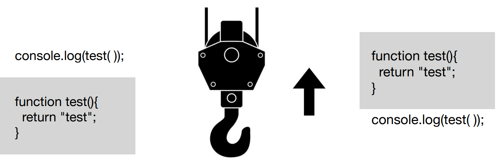

함수를 작성하고 실행하는 순서를 확인해본다.
자바스크립트가 실행되면parser가 빌드하면서 문법을 검사합니다. 이 와중에 끌어올릴 값을 선택해 내부적으로 최상단으로 끌어 올려 처리합니다.
여기서 끌어 올려질 내용물은 선언입니다. var,let,const,function등이 대표적입니다
전역범위(global scope)내에서는 스크릅트 최상단으로 끌어올립니다.
함수범위(function scope)내에서는 함수의 최상단으로 끌어올립니다.

변수 선언시 var키워드는 생략을 해도 변수사용이 가능하였으며, 변수선언뒤 다음에 또 다시 같은 변수를 선언을 하면 프로개림이 에러나지 않고 실행이 되는 문제점이 있었다.
let: 값이 변하는 변수를 설정하고자 할 떄 사용하는 키워드
const: 값이 고정된 변수를 설정하고자 할 떄 사용하는 키워드